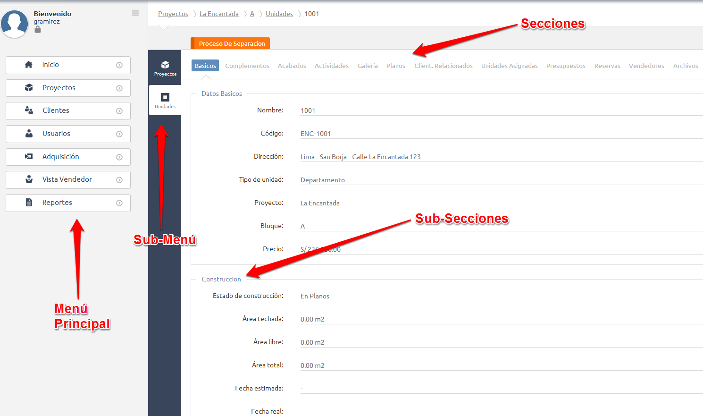
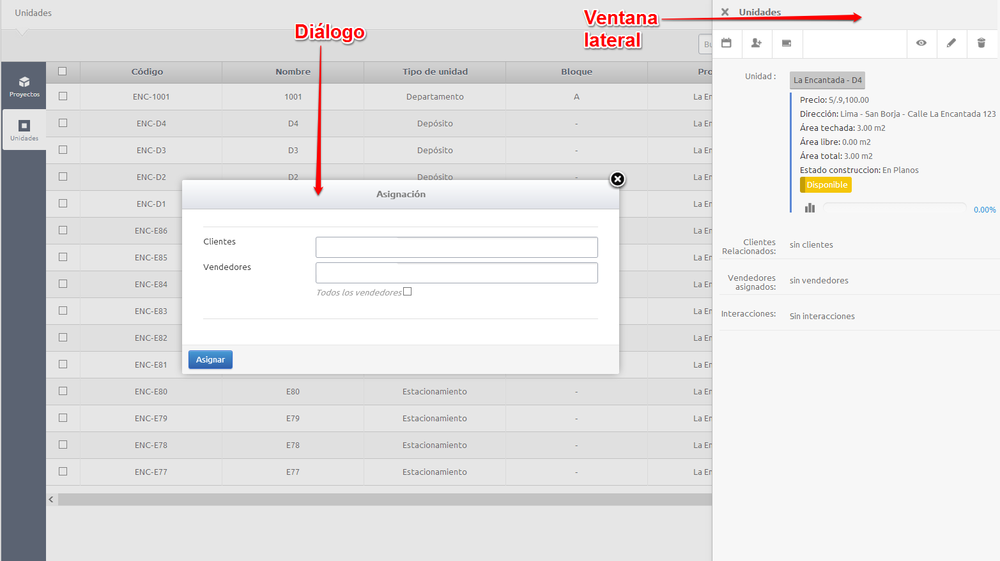
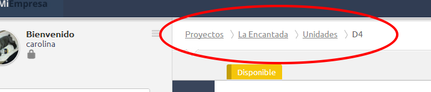
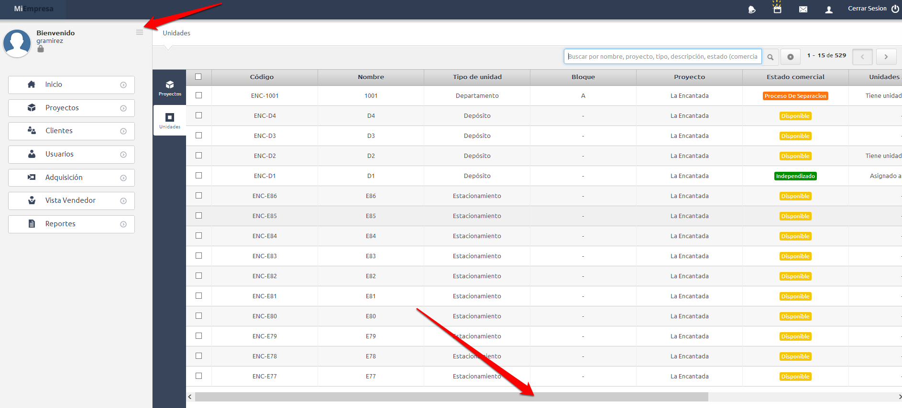
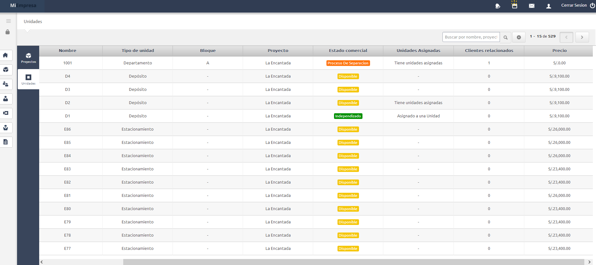

Algunas recomendaciones para la navegación en el sistema:
El sistema se navega a través la siguiente estructura: Menú Principal, Sub-Menú, Secciones, Sub-Secciones.

El sistema también cuenta con diálogos y ventanas laterales que se muestran dependiendo de las opciones elegidas.

Breadcrumbs o "migajas de pan" son utilizadas para recordar la ruta por la que llegaron a la ventana actual.

En vistas que requieran mayor despliegue horizontal puedes utilizar el scroll lateral, o incluso puedes minimizar el menú principal.

El menú queda minimizado, y la pantalla muestra más información.
